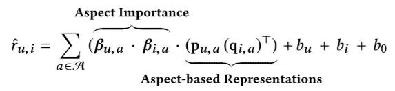

ANR: Aspect-based Neural Recommender
研究内容
利用用户和物品的历史评论信息，估算每一个用户u对任何一个新的物品（以前未有交互记录的）的评分ru,i，然后向用户推荐评分最高的新的物品。
评论中存在的“问题”
1、并非评论的所有部分都同样重要。
例如电影评论中可能存在故事细节的描述，可能与用户的整体满意度无关。
2、每一条评论可能包含多个 “方面”。
评论长度：一般约100到150个字；
用户可能描述商品的各种属性。
“方面”：
高级语义概念；
包含给定领域的物品属性的特定方面。
例如：对于餐厅可能包含位置、服务、食物、价格等 “方面”。服务方面又可以包含员工服务态度、等待时间、代客泊车等属性。
模型
Input层
User Document Du: 用户u编写的所有评论。
Item Document Di: 对物品i的所有评论。
Embedding Layer
作用：将单词序列转化为矩阵。
在一个共享嵌入矩阵的查找操作（嵌入矩阵：利用在大型语料库上经过预先训练的词向量来初始化，例如word2vec2 或GloVe3 。）
保留带有每个文档的单词的顺序和上下文
Aspect-based Representations
通过学习每个方面中与方面相关的单词的子集，来学习用户（物品）U在该方面的表达。
Aspect Importance
不同用户对物品的各个方面关注度不同。一个用户在看不同物品时，关注点会改变。同一物品，不同用户有着不同的关注点。论文提出以联合方式来学习用户和项目方面的重要性，即在学习用户注重方面的时候，将上面得到的物品的表达作为文档考虑进去，物品方面同理可得。
输出：代表对于用户在每个方面的重要性的K维向量，以及物品的相应的K维向量。
User-Item Rating Prediction
